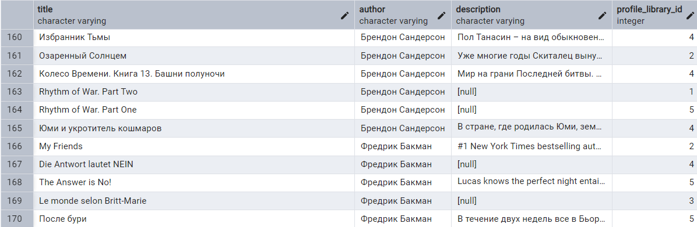
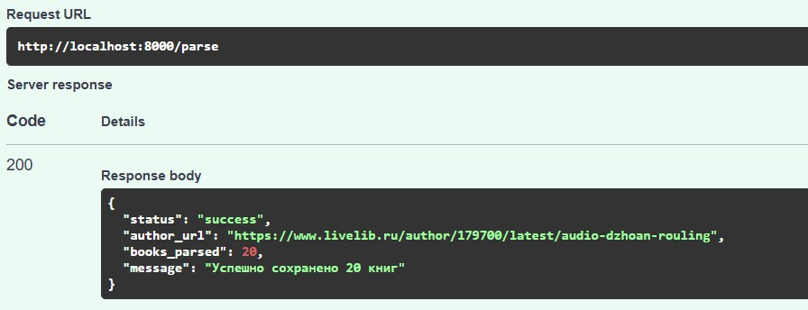
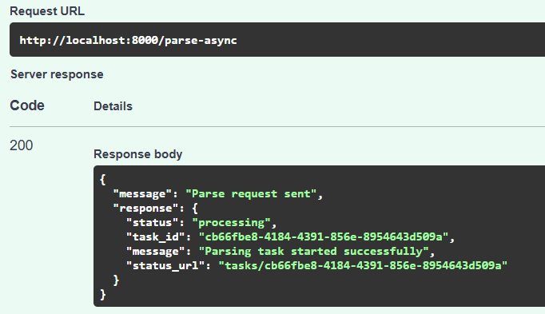
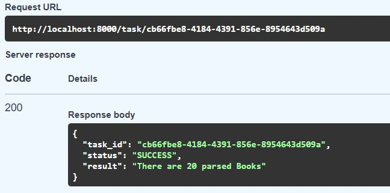

Разработка парсера книг с запрошенного веб-сайта с помощью Async.
Задача
Написать программу на Python для параллельного парсинга нескольких веб-страниц с сохранением данных в базу данных с использованием async. Программа должна парсить информацию с нескольких веб-сайтов, сохранять их в базу данных.
Исследование предметной области
В результате некоторого ресёрча выяснилось, что есть три основных варианта парсинга веб-страниц: threading - модуль threading, multiprocessing - модуль multiprocessing, и async - ключевые слова async/await и модуль aiohttp для асинхронных запросов.
За кулисами были написаны три программы, каждая с использованием нового подхода. Каждая программа содержит функцию parse_and_save(url), которая загружает HTML-страницу по указанному URL, парсит ее, сохраняет заголовок страницы в базу данных и выводит результат на экран.
Вот такие получились результаты:
| Method | time (sec) |
|---|---|
threading |
0.42 |
multiprocessing |
1.75 |
asyncio |
0.42 |
Определённо точно одно - Multiprocessing показал наихудший результат из-за требования отдельного подключения к БД для каждого процесса и накладных расходов на их создание.
Threading и Async показали схожие результаты, но для задачи парсинга и сохранения данных всё же лучше подходит второй процесс, потому что:
- он эффективен для I/O-bound задач – например, множество HTTP-запросов.
- меньше накладных расходов, чем у потоков.
p. s. доказательство загрузки данных в бд

Поэтому приступаем к основной работе.
Ход работы
Сама система парсера хранится в смежной буккроссингу папке.
Прямой парсинг
1. Функции парсинга веб-страниц
Предварительные исследование и эксперименты оказались вдвойне полезные, так как теперь у меня есть готовая система для парсинга веб-страниц.
Логика:
1) Сначала parse_and_save_books вызывает parse_books, которая загружает HTML-страницу
через fetch, парсит её с помощью BeautifulSoup, извлекает данные об авторе и книгах,
формируя список словарей с информацией о каждой книге.
2) Затем parse_and_save_books передаёт полученный список в save_books, которая асинхронно сохраняет каждую книгу в базу данных через SQLAlchemy, используя асинхронное подключение, и возвращает количество сохранённых записей.
3) Если на любом этапе возникает ошибка (например, проблемы с подключением или парсингом), она перехватывается и преобразуется в HTTPException с соответствующим статусом и описанием.
async def fetch(session: aiohttp.ClientSession, url: str) -> str:
async with session.get(url) as response:
if response.status != 200:
raise HTTPException(status_code=response.status, detail="Ошибка при загрузке страницы")
return await response.text()
async def parse_books(url: str):
"""Парсинг книг автора с LiveLib"""
async with aiohttp.ClientSession() as session:
html = await fetch(session, url)
soup = BeautifulSoup(html, 'html.parser')
author_element = soup.find('div', class_='author-header__name')
if not author_element:
raise HTTPException(status_code=400, detail="Не удалось найти автора на странице")
author = author_element.text.strip()
books = []
for book_item in soup.find_all('div', class_='book-item__inner'):
title_element = book_item.find('a', class_='book-item__title')
if not title_element:
continue
title = title_element.text.strip()
description = book_item.find('p')
description = ".".join(
description.text.strip().split(".")[:3]) + "." if description else None
books.append({"author": author,
"title": title,
"description": description})
return books
async def save_books(books):
async with AsyncSession(async_engine) as connection:
count = len(books)
for book in books:
db_book = BookParsed(**book)
connection.add(db_book)
await connection.commit()
return count
async def parse_and_save_books(url):
try:
books = await parse_books(url)
count = await save_books(books)
return count
except HTTPException:
raise
except Exception as e:
raise HTTPException(
status_code=500,
detail=f"Data processing error: {str(e)}"
)
2. Вызов парсера через FastAPI приложение
POST /parse - POST запрос к отельному FastAPI приложению парсера, интеграция которого в
Bookcrossing произойдёт чуть позже.
@app.post("/parse")
async def parse_author_books(data: InputUrl):
try:
books_parsed = await parse_and_save_books(data.url)
return {
"status": "success",
"author_url": data.url,
"books_parsed": books_parsed,
"message": f"Successfully saved {books_parsed} new books"
}
except HTTPException:
raise
except Exception as e:
raise HTTPException(
status_code=500,
detail=f"Parsing error: {str(e)}"
)
3. Интеграция в Bookcrossing приложение
А вот и она - связь парсера и основного приложения!
@router.post("/parse")
async def parse_url(request: RequestURL):
try:
async with httpx.AsyncClient() as client:
response = await client.post(
f"http://parser:8001/parse",
json={"url": request.url},
timeout=30.0
)
response.raise_for_status()
return response.json()
except httpx.HTTPStatusError as e:
raise HTTPException(
status_code=e.response.status_code,
detail=f"Parser service error: {e.response.text}"
)
except Exception as e:
raise HTTPException(
status_code=500,
detail=f"Internal server error: {str(e)}"
)

Получается, что основное буккроссинг FastAPI приложение делает запрос на ссылку приложения парсера, дальше работа происходит уже в нём (то есть в отдельно поднятом контейнере). Происходит парсинг, сохранение в бд и возврат ответа основному приложению.
Вызов парсера из FastAPI через Celery
Как это работает:
Celery — это асинхронная очередь задач, которая позволяет легко распределять и выполнять задачи в фоне. Redis используется как брокер сообщений, хранящий задачи, которые должны быть выполнены. При получении HTTP-запроса, задача ставится в очередь Redis, и Celery-воркер обрабатывает её в фоне.
Это позволяет запускать парсинг веб-страниц в фоне, что улучшает производительность и пользовательский опыт приложения.
В основное приложение Bookcrossing поступает запрос парсинга url, который переадресовывается в приложение Parser парсера. Там этот запрос ставится в очередь Celery и только после этого обрабатывается и выполняется, возвращая ответ биг боссу.
app/crud/parser.py
@router.post("/parse-async")
async def parse_url_async(request: RequestURL):
try:
async with httpx.AsyncClient() as client:
response = await client.post(
f"http://parser:8001/parse-async",
json={"url": request.url},
timeout=30.0
)
response.raise_for_status()
return {"message": "Parse request sent", "response": response.json()}
parser/app/parser_app.py
@app.post("/parse-async")
async def start_parsing(data: InputUrl):
try:
logger.info(f"Starting parsing task for URL: {data.url}")
task = parse_url_task.delay(data.url)
logger.info(f"Task created with id: {task.id}")
return {
"status": "processing",
"task_id": task.id,
"message": "Parsing task started successfully",
}

Так выглядят настройки Celery и его Task:
parser/app/celery_tasks.py
celery_app = Celery(
'bookcrossing',
broker='redis://redis:6379/0',
backend='redis://redis:6379/0',
)
@celery_app.task
def parse_url_task(url: str):
result = asyncio.run(parse_and_save_books(url))
return f"There are {result} newly parsed Books"

Результат
app/crud/parser.py содержит следующие эндпоинты:
GET /parsed-booksдля вывода только что сохранённых книгPOST /parseдля прямого парсингаPOST /parse-async, понятно, для асинхронного парсинга с очередьюGET /task/{task_id}статус отдельно взятой таски
parser/app/parser_app.py содержит всего последние три из вышеперечисленных эндпоинта, потому что именно они нужны для совместной работы двух приложений.